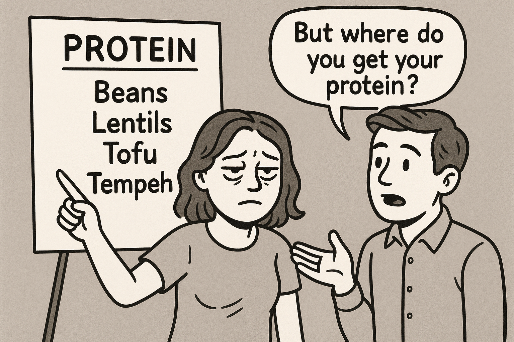
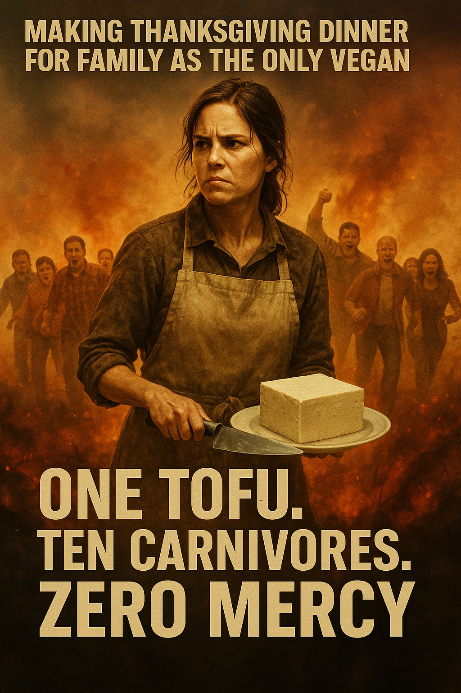
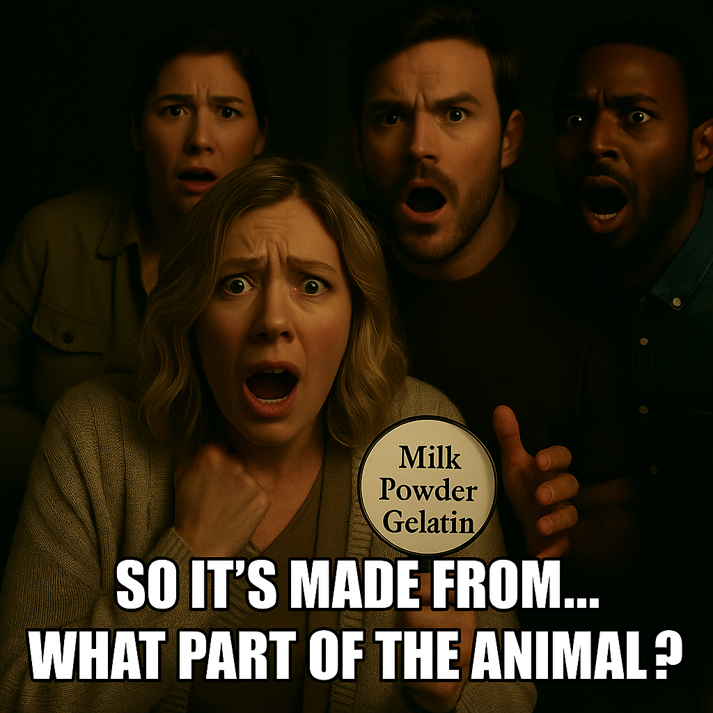
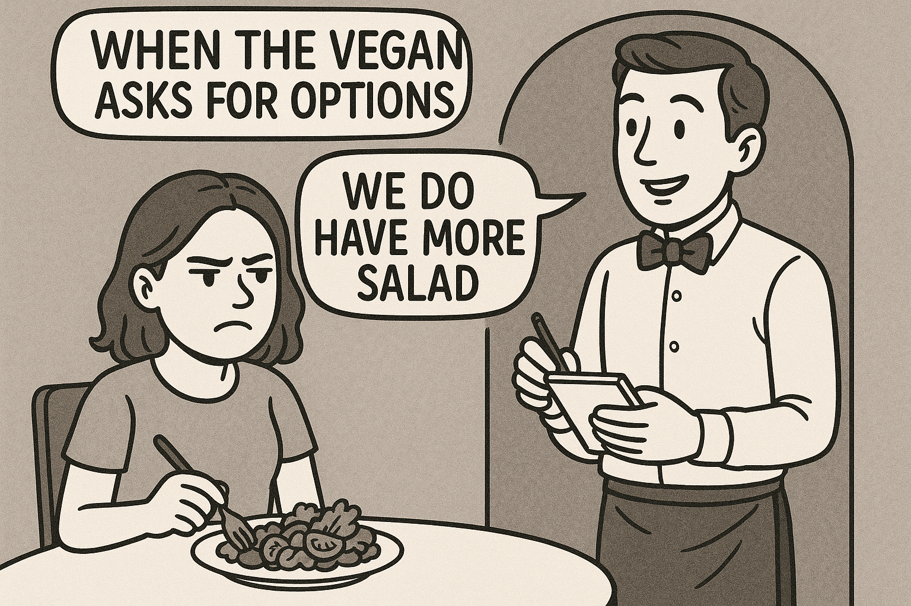

😂 Vegan Protein Memes
Because if one more person asks "but where do you get your protein?" we're going to need therapy. Scroll, laugh, share, repeat.

🫠 The sign is RIGHT THERE. Beans. Lentils. Tofu. Tempeh. And yet, the question persists like a zombie that feeds on plant-based patience.

🦃 One tofu. Ten carnivores. Zero mercy. The Thanksgiving sequel nobody asked for but every vegan lives through annually.

💥 *calmly mentions being vegan* — "AND I TOOK THAT PERSONALLY." Some people hear "I'm vegan" the way dogs hear a vacuum cleaner.

👑 The Chosen One. A lone veggie patty holding the line against an army of steaks. Respect the courage. Fear the grill marks.

😱 "So it's made from... what part of the animal?" The moment non-vegans accidentally vegan-pill themselves reading ingredients.

🥗 "We do have more salad!" Thanks. Revolutionary. What's next — a glass of water with a side of disappointment?

📋 Yes, protein. No, not even fish. Yes, I'm fine. At this point just laminate the FAQ and hand it out at parties.